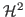

Rank structured matrices, such as
 -matrices,
-matrices,

-matrices, and (Hierarchically) Semi-Separable matrices have been used for designing fast algorithms for PDEs, integral equations, etc. Even though these classes of methods are ideal solver candidates for extreme-scale problems and machines because of their low computational complexity, existing studies focus mostly on theoretical aspects, and most methods are only implemented on sequential machines. In the last couple of years, we have been working on scalable HSS matrix factorization algorithms and embedding them into the traditional sparse factorization methods, exploiting the data-sparseness property of the intermediate dense submatrices. The HSS-structured sparse factorization achieves nearly linear complexity for certain PDEs. It can be used as a fast direct solver for some problems, and more importantly, as an algebraic preconditioner for broader classes of sparse linear systems.With the emerging architectures with manycore nodes offering million-way parallelism, one of the key challenges facing the algorithm developers is the increasing rate of system failures. We are developing ABFT schemes for the critial HSS matrix operations, such as HSS-matrix-vector product and ULV factorization. Our fault detection and recovery mechanisms take full advantage of the hierarchical nature of the HSS structure, and can be implemented efficiently through containment domains on large-scale systems.
This is joint work with Brian Austin, Osni Marques, Artem Napov, and Eric Roman.